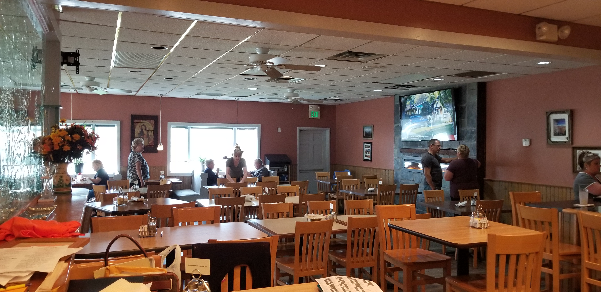
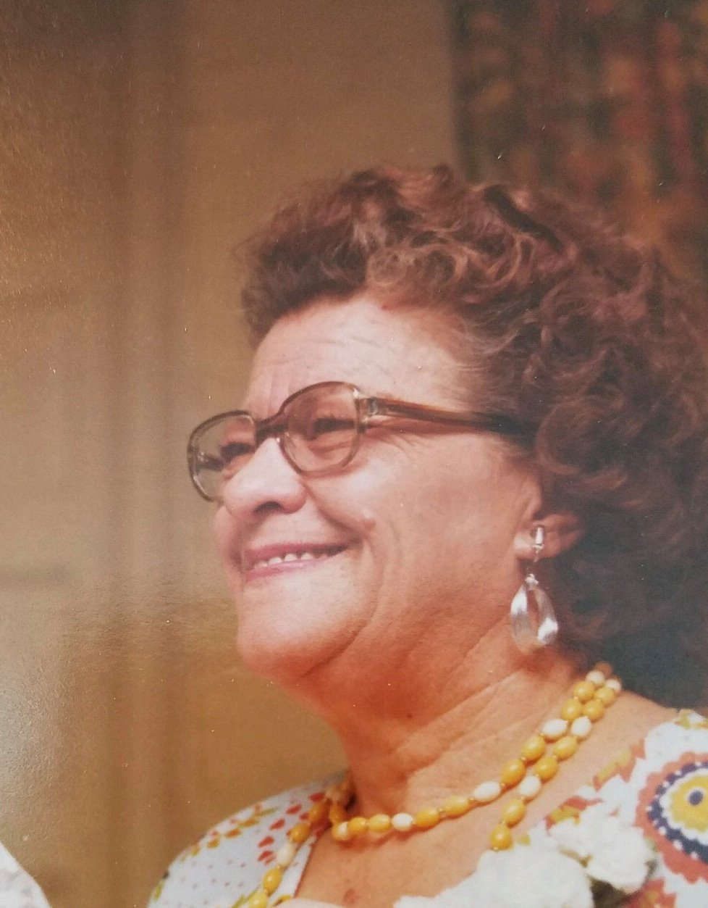
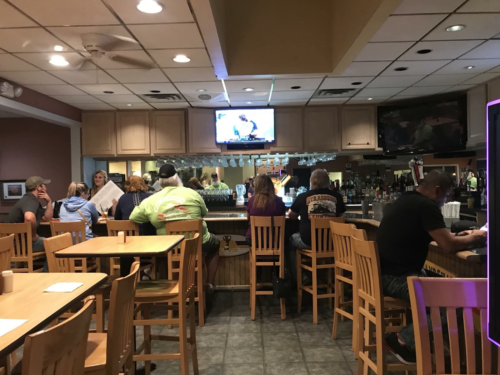
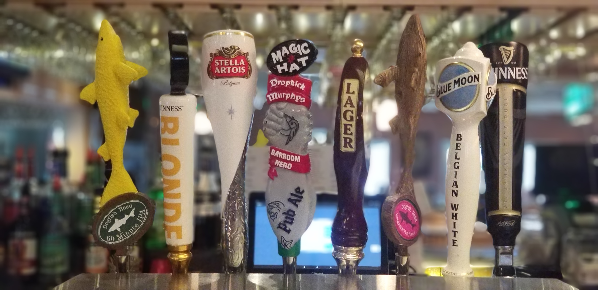

Breakfast through dinner
Start with breakfast, come back for a full lunch or dinner, and bring the family.
Middle River's neighborhood table
Family-operated in Baltimore County for decades, Alice's serves breakfast, crabcakes, pasta, country cooking, carry out, delivery, catering, and cold beer on tap.
Family kept secrets

It started with the head of the family, Ms. Alice: family, good cooking, and recipes passed down through generations. Today, the restaurant keeps that same spirit alive for the Middle River community.
Come for a meal with family, meet friends at the bar, or settle in for the game on the flat screens.
Plan your visitWhat to expect
Settle in for family-style plates, seafood favorites, breakfast classics, and an easy order-ahead option when you need dinner to go.

Start with breakfast, come back for a full lunch or dinner, and bring the family.

Homestyle plates, seafood, pasta, and familiar favorites for the table.

A casual bar area for watching the game with local regulars and friends.
Carry out and delivery
Order online through Toast or call the restaurant directly for questions, catering, and carry out.
Hours
Visit Alice's
Stop by for a meal, call ahead for carry out, or use the map link for quick directions to the restaurant.